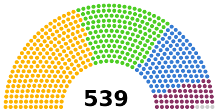

As the lower house of the Estates-General, the Chamber of Deputies is a consultative forum elected by the citizens in the Cantons of Imperial Royal Union. Each Canton returns 11 Deputies, bringing the total number of Deputies to 539. The electoral system for electing Deputies is dependent on the electoral laws of the Territory which the Cantons are located in. The Chamber is chaired by the Chief Presiding Officer, who is appointed by the Emperor. The Chamber is granted limited powers regarding local legislatures in the Cantons, thus allowing the Chamber to perform an oversight role over the local legislatures and ensure accountability back to HIM Government. The Chamber is a partisan institution, and the largest party in the Chamber has been the National Solidarity Coalition since the reformation of the Estates-General in 2018.
| Political Party | Number of Seats | Percentage of Seats |
|---|---|---|
| National Solidarity Coalition | 217 | 40.3% |
| Imperialean Green Alliance | 158 | 29.3% |
| Socialist Progress Movement | 111 | 20.6% |
| National Conservative Alliance | 49 | 9.1% |
| Independent | 4 | 0.7% |
| Total | 539 | 100% |